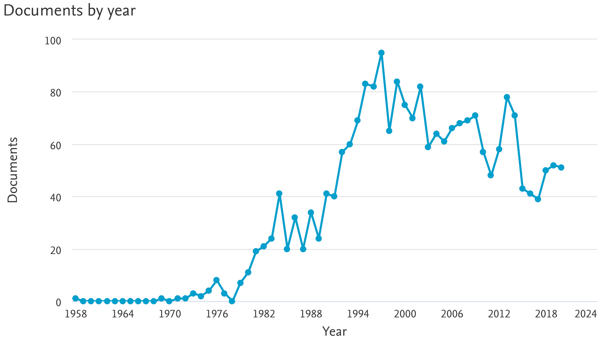
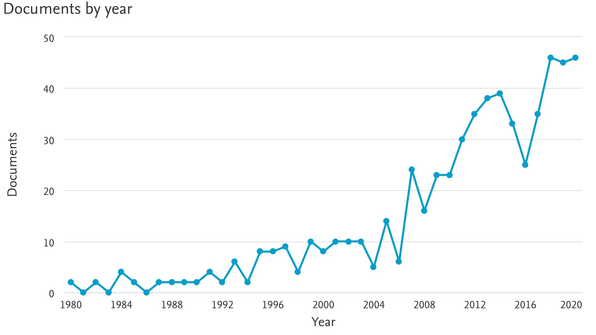
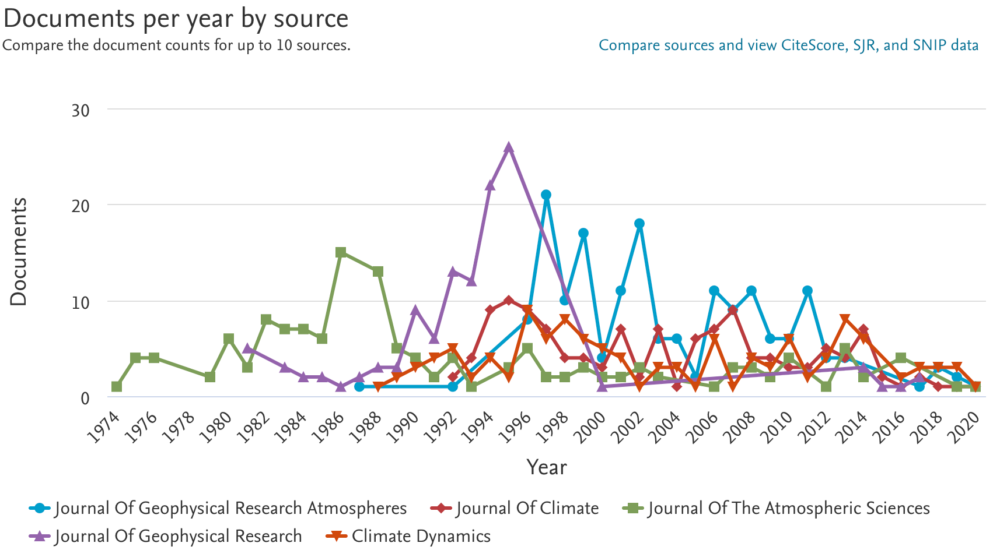
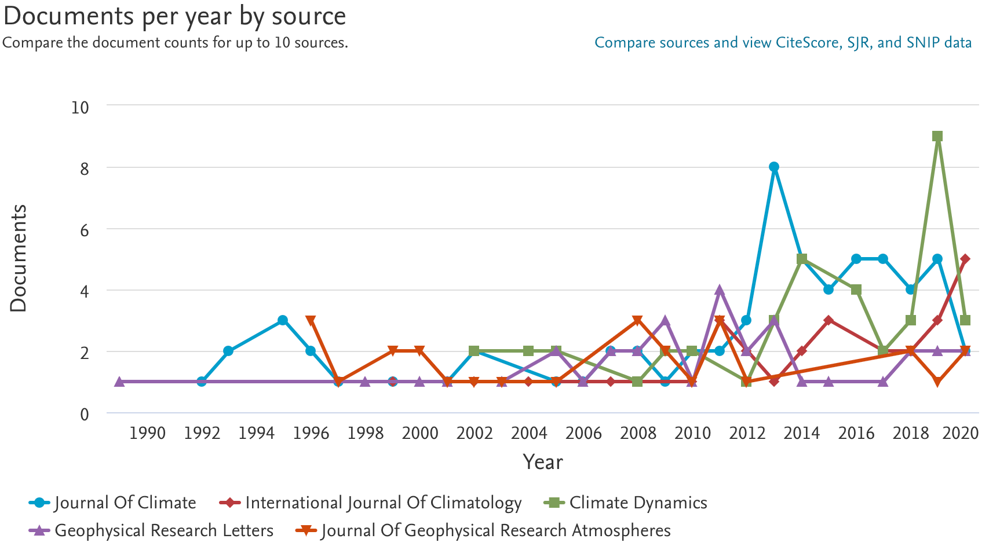
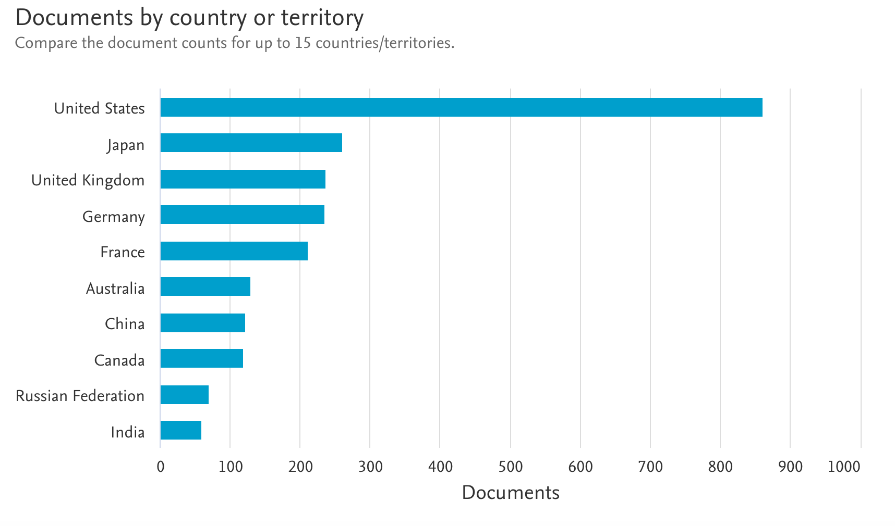
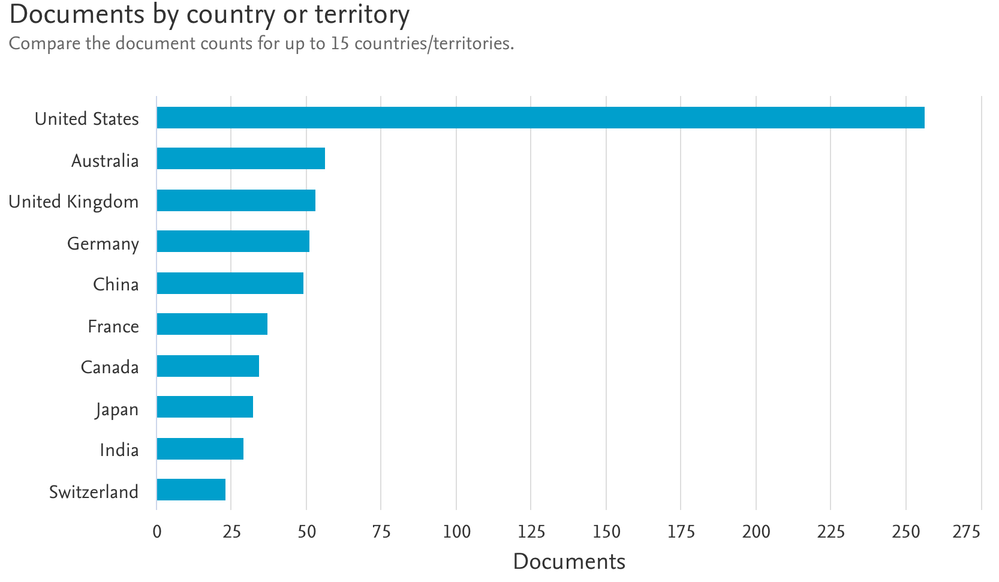
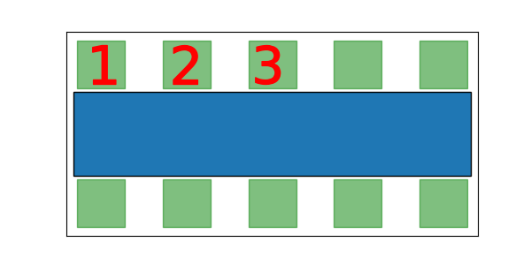
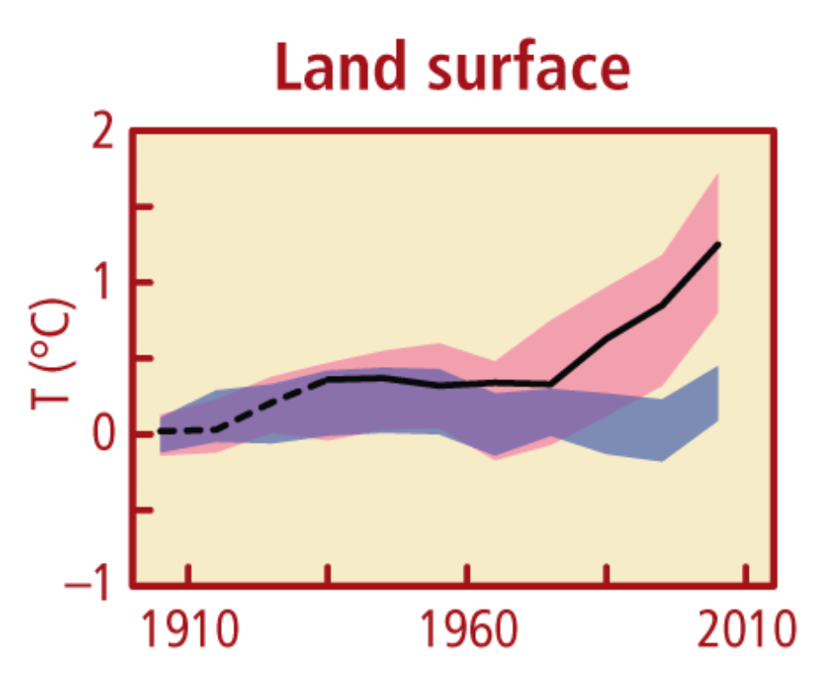
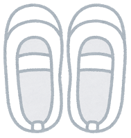

2020.11
Table of contents
- ナガシマリゾートはすごいぞ
- ナガシマスパーランドはすごいぞ
- 今日はいいえがおの日
- いつもチキンを頼む理由
- GCM(General Circulation Model/Global Climate Model)
- ブログ開始から２ヶ月経った
- グループで話すときに好きなポジション
- 気候モデルの結果を市民に信用してもらえるのか
- 飲み会の準備は楽しい
- 設定不全に気づいたら、まずはチャットで情報を伝えるのが吉
- 自分に合う靴を選ぶの難しい
- 私の足の指は５本
- やべー、更新滞ってきた
- 足幅が広いと、こんなことが起こる
- 学部生のときのお酒
- バレーボールは簡単に楽しめるスポーツ
- 実験や実習で部活を休みたくなかった
- 地球温暖化が人間活動のせいではない?
- 勉強せざるを得なかった熱力学
- 私の進路選択ー小４から高３ー
- 地球大進化
- チャットツール
- 翻訳ツール
- はじめての学会
- ハイキュー!!はとにかく優しい物語
- アイコンの顔写真
- 急に誘われるのが好きではない
- 自己主張したい
ナガシマリゾートはすごいぞ
昨日のブログはナガシマスパーランドの入場者数を示すだけで、その魅力をお伝えしていなかったので、追記。 私も分かっていなかったのだが、ナガシマリゾートという複合施設の一つが、ナガシマスパーランドだ。
ナガシマリゾートには
- ジェットコースターなどを備えたアミューズメント施設、ナガシマスパーランド
- ウォータースライダーも楽しめる海水プール、ジャンボ海水プール。誤って水を飲むと辛い。
- 天然露天風呂、湯あみの島
- 四季折々の花とイルミネーションが綺麗な、なばなの里。イルミネーションはまぶしいくらい。
- ブランド店が並ぶ、三井アウトレットパーク
- 所在地は三重県、名古屋アンパンマンミュージアム
などなどの施設があるのだ！
すごくない？ナガシマリゾート
2020.11.27
ナガシマスパーランドはすごいぞ
私は三重県桑名市出身だ。 桑名市は三重県の最北・東側に位置する。 「其の手は桑名の焼き蛤」を連想してもらえることがあるが、私は焼き蛤を食べた記憶はない。 地元自慢としてそれよりも、ナガシマスパーランドを推したい。
ナガシマスパーランドは2019年、国内テーマパークの入場者数ランキング第４位である。 ディズニーランド・シー・USJに続く、第４位である。 年間595万人が来たそうだ。 皆が常識の若く知っているディズニーランド1791万人の、３分の１も来た。 TEA/AECOM 2019 Theme Index and Museum Index: The Global Attractions Attendance Report
それにもかかわらず、上京してからナガシマスパーランドを自慢しても、知らないと言われることが多い。 どういうわけか、三重県にある志摩スペイン村の方は知られている。 こちらは年間入場者数が約120万で、圏外からのアクセスもよくないのだが。 全国の主要レジャー・集客施設 入場者数ランキング
2020.11.26 +1日 毎日更新は難しい
今日はいいえがおの日
今日11/25は、1125（いいにっこり）にちなんでいいえがおの日である。 えがお
笑顔であっても、人によっては「ニコニコ」と評されたり、「ニヤニヤ」と評されたりする。 何が違うんだろうか。 普段のその人に対する印象だろうか。
2020.11.25
いつもチキンを頼む理由
柏キャンパスに登校した日のお昼は、校内の食堂カフェテリアにいく。 私は毎回、定食のメインにチキン焼きを頼む。 いつも頼むものだから最近は、注文前から店員さんがチキン用のトングを手にするようになった。
味の好みでいえば、チキンは他のメイン（豚肉と野菜の炒め物とか、ミックス魚介フライとか）と同じくらい。 チキンを選ぶ理由は、タンパク源として環境負荷が比較的少ない食品だと言われているからだ。 資料はたとえばEnvironmental impacts of food production。
強いこだわりではなく、どのメインでも個人的な満足度が一緒くらいという前提があって、環境負荷が小さそうなものを選んでいるだけだ。 ビーガン食を選ぶほどではない。 そしておそらく私は、食品にかかるものとは比べ物にならない量の温室効果ガスを、研究で排出している。 スパコンの電気使用量はバカにならないそうなので。
「京」の消費電力は約30,000世帯分に相当します
2020.11.24
GCM(General Circulation Model/Global Climate Model)
私がいる東京大学大気海洋研究所気候システム研究系のルーツである、気候システムセンター設立の目的は
新しい気候モデルの開発，気候形成メカニズムの理解，地球温暖化現象の理解に役立つ研究，全国研究者のモデル利用促進，そして教育
であった。（東京大学大気海洋研究所50年史） 設立から30年たった今もその理念は変わらず、気候システム研究系にいる研究者・学生のほとんどが気候モデルを使っている。
気候モデルは、英語でGCMに相当する。 GCMについて、論文によってGeneral Circulation Modelの略称とされる場合、Global Climate Modelの略称とされる場合の両方を見る。
- どちらがmajorityか
- 長年の使用傾向
- 掲載雑誌や国によって傾向が違うのか
気になったので調査した。
これから表示するデータは、ScopusのDocument searchを使って調べたものだ。
まず、”General Circulation Model”/”Global Climate Model”がタイトルに含まれている論文数は全部で、2226/592だった。 General Circulation Modelの方が、３倍以上の頻度で使われている。
次に、タイトルに使用された論文数の変化について。 以降のグラフでは、軸の最大値が揃っていないことに注意。
General Circulation Model

Global Climate Model

General Circulation Modelが2000年頃から減少傾向にあるのに対して、Global Climate Modelは2005年頃から人気が上がっている。
掲載雑誌毎の傾向
General Circulation Model

Global Climate Model

ジャーナル名に”climate”が含まれている雑誌(Journal Of Climate/Climate Dynamics)で、 Global Climate Modelが好まれている、気がする。
国ごとの傾向
General Circulation Model

Global Climate Model

日本はGeneral Circulation Modelを好む傾向があるようだ。
ちなみにGoogle Scholarでも調べたところ、タイトルに含まれる論文数は全部で3210/905と、やはりGeneral Circulation Modelの方がよく使われていた。
個人的にはGCRM(Global Cloud-system Resolving Model)と対比したいがために、Global Climate Modelを使うことが多い。
2020.11.23
ブログ開始から２ヶ月経った
ブログを書きはじめてから２ヶ月経っていた。 本日の怒涛の更新により（これは７記事目）、なんとか一日一記事ペースの更新を保っている。 さながら夏休みの最終日に、さかのぼって日記を書いているような心持ちである。
まだまだ書きたいことが山積みなので、もうしばらく続ける。 テーマ探しよりも、適切なテーマ間の線引きと、文量調節が難しいのだが。
2020.11.22
グループで話すときに好きなポジション
次のようなテーブル席の食事会では、１,２,３どの席が好みだろうか。

私は事情がない限り、１に座ろうとする。 自分が会話を楽しめるかどうかより、他人を退屈させていないかどうかが気になるのだ。 ２に座ってしまった場合、１に座った方が楽しんでいるかどうか、心配になる。
一番好きな席は、３だ。 両隣の４人ずつで話すだろうから、私が会話を回す必要はない。 楽しそうな会話がされていたら、どちらにも入ることができる。
ついでに、３人だけで横並びになって話すときは、端が好みである。 真ん中にいると、どちらを向いたらいいのか分からない。 歩いているときは、このさい２人で話しているのを後ろから盗み聞きするポジションになろうかと、歩みをゆっくりにしてみる。
2020.11.22 ついに追いついたぜ。いえーい。
気候モデルの結果を市民に信用してもらえるのか
授業のレポートで『The impact of climate conditions on economic production. Evidence from a global panel of regions』 という論文をまとめた。 地球温暖化が、世界各地域で経済成長に与える影響を調査したものだ。 ERA5, RCP8.5, GFDLといった、気候研究者にはおなじみの？道具も使われている。
調査には、過去の気温変化と経済レベルのデータ、統計モデル、将来の気温上昇予測データなどが用いられている。 これらを用いてたとえば、「21世紀末までの3.5℃の地表気温上昇は、全世界で生産量を7-14%減らす」などの推定がされている。
An increase in global mean surface temperature by about 3.5°C until the end of the century would reduce global output by 7–14% in 2100, with even higher damages in tropical and poor regions.
私の率直な感想は、「非線形な現象で、なおかつデータは交絡因子まみれであろうに、見たいシグナルを適切に抽出できるんだろうか？」である。 もちろんシグナルを取り出すために解析手法が工夫されているし、わざわざ結果を疑う積極的な理由もない。 それでも、個人的に馴染みのない経済データの解析結果には、どれほど信頼がおけるのかと疑念を抱いてしまう。 こういったデータ解釈の塩梅は、自分の手を動かさないと、なかなか掴めない。
次の図は、地球温暖化は人間活動のせいであることを示すために、しばしば用いられる図だ。

ここ100年ほどの、地上の気温変化を表している。 黒線は観測データである。 青の帯が自然起源の強制（火山や太陽活動の変動など）のみを与えたモデル、赤の帯が自然起源の強制と人為起源の強制（温室効果ガスなど）の両方を与えたモデルの結果だ。 帯の幅は、モデルの不確実性を表している。 人為起源の強制がなければ、こんなに温暖化していないでしょ？というわけだ。
気候モデルに全く馴染みのない人に、この図を正確に理解してもらえるよう説明するのは、かなり難しい。 観測データやモデルには不確実性があるので、「これが真実です！」と声を大にして言える内容でもない。
一般に、研究結果のアウトリーチや一般向け解説書では、論文に比べて噛み砕いた表現がされる。 それでも、分野外の人から研究内容について納得してもらえることでは、まれであろう。 だからこそ、研究結果は批判に耐えうる強靭なものである必要がある。 結果の解釈にはある程度の自由があるものの、揺らがない根拠に基づいた丁寧な洞察が求められる。
2020.11.21 +１日
飲み会の準備は楽しい
iOSのnotesを整理した。 最古のメモは、2018/12/13のものだった。
ソーセージ
トマト缶
ポップコーンのもと
イカ耳フライ
チーズ
モッツァレラチーズ
冷凍ご飯
エビアボカド
サーモンチーズ
ベーコンうずら
チーズめっちゃ好きやん。 イカに耳はないと思う。
このメモはおそらく、景気付け会の買い出しのために書いたものだ。 個人的な気まぐれで企画して、学生を中心に20名くらい集め、研究棟備え付けの和室で飲み会を開いた。 当日に食べ物を温めたり、運んだり、片付けは手伝ってもらったが、買い出しと基本調理は全部一人でやった。 買い出しは一気にできないので、一週間かけてスーパーへ通っては、共用の冷蔵庫を埋めていった。 数日前に、保存が効くものから調理をはじめた。
当時は修士２年。 真面目だったので、１月の修士論文に向けて忙しかった。
仮に同期がこれらの準備を一人で全部やろうとしていたら、びっくりするし、手伝おうとする。 しかし私の場合、勝手に企画したこともあるが、準備を全く負担に思っていなかった。 それどころか、景気付け会があるからこそ、毎日がんばれていた。
当日は楽しかったし、来てくれた人も楽しんでくれた（ように見えた）。 シチューが一瞬でなくなったので、「もしかして私は料理上手なのか？」と承認欲求も満ち満ちになった。 おまけに偉い方々のおかげで、ちょっと儲けた。
今現在も、それなりの規模のオンライン飲み会を計画中だ。 発案から企画まで勝手にやっているので、「迷惑かけてないか？準備は万全か？」と冷や冷やするが、来たい人が来て楽しんでもらえたら良いとしよう。 オンラインなので、手間をかけられなくて残念に思う。
2020.11.20 +２日
設定不全に気づいたら、まずはチャットで情報を伝えるのが吉
先日おバカなことをして恥ずかしかったので、ここで供養しておく。
オンラインの授業やセミナーでは、画面共有に失敗していたり、意図せずアンミュートになるという事故が、しばしば起こる。
先日のセミナーで、ノイズが聞こえるなと思ったら、アンミュートになっている方がいた。 その方は私から数mのところに座っており、どうやら喋るためにミュート解除したわけではなさそうだ。 さて、どうするか。
自分の場合、何か設定をミスしていたら、即座に教えてほしい。 「事故が起こる前に、少しでも早くアンミュートになっていることを教えてあげよう！」と思った私は、親切なつもりでその方に直接話しかけて、アンミュートになっていることを伝えた。
すると、何が起こったか。 その方は、私の発言を聞き返すために、喋った。 事故を未然に防ぐつもりが、事故を引き起こしてしまったのである。
個人チャットで伝えるべきだったなあ。
2020.11.19 +３日
自分に合う靴を選ぶの難しい
幅広であることに加えて、足に関する問題を二つ抱えている。
一つ目は、巻き爪になっていること。 ２年前の夏、なんとなくペディキュアを塗った。 その状態で爪を切ったときに、適切な長さが見えず、切りすぎてしまった。 大きな問題ではないので放置しているが、２年経っても治らない。
二つ目は、左薬指に圧力をかけ続けると、ビリビリすること。 学部生のころ、幅が狭い靴に足を押し込めて一日中歩き回ったら、左薬指が痛くなってしまった。 それ以来、体重をかけ続けると痛む。 バレーボールの最中に、自分の右足で左足を踏んで（どうしてそうなった）、もんどりを打ったこともある。
このような問題ゆえ、私が長時間はける靴は、幅がゆったりしており、かつかかとが低いものに限られる。 ハイヒールを履かねばならない場面では、現地に持っていって直前にはきかえる。
昨日まで、かかとを踏んだスリッポン（製造者は踏まれることを想定していない）しか、外を歩ける靴がなかった。 いいかげん新しい靴を買ったのだけど、今度は合いますように。
2020.11.18 +４日
私の足の指は５本
先日のブログで、足の６本目の指が出っ張っていると書いたが、私の指は５本だ。
「出っ張っているのは、猿だった頃にあった６本目の指の、名残の骨だよ」と小さい頃に言われたのを鵜呑みにしていた。 しかしよく考えてみると、大学の授業でみた類人猿の足は、５本指だった。
多指（趾）症という疾患があるにもかかわらず、紛らわしい書き方をしたことを反省している。
2020.11.17 +５日
やべー、更新滞ってきた
この記事を書いている今は、11月19日である。 毎日１記事以上アップを目標にしているので、体裁としては16日の更新分とする。
ここ数日、ブログ更新をサボっていた。 やらなきゃいけないことを後回しにしていると、ブログをそれより優先するのが難しい。 まずはやるべきことを片す。
３連休の間に本来の日付に追いつくぞー。
2020.11.16 +３日
足幅が広いと、こんなことが起こる
私の足は、６本目の指が出っ張っているため、幅が広い。
足のサイズと同様、足の幅にも規格がある。
日本ではJISで決められた８種類の幅、細い方からA・B・C・D・E・EE・EEE・EEEEがあります。
日本人はＥ幅が一番多いとされています。
以前お店で測ってもらったら4Eだったので、客観的にもかなり幅広である。
足幅が広いと、こんなことが起こる
(1)上履きがブヨブヨになる
小学校で履いていた、あの上履きがブヨブヨになる。 
なんだかふやけたように、ラインのところが波打っていた。 トイレでは共用スリッパに履き替えるが、帰ってきたときに、自分のものが一目瞭然で便利だった。
(2)靴の側面が裂けて、寿命を迎える
幅が合っていない靴を無理やり履いていると、痛い。 しまいには側面が裂けてしまう。
幅広もあって、いつも靴選びに苦労するのだが、これは次回のブログのお題とする。
2020.11.15
学部生のときのお酒
「バレーボール部に所属していたなら、よく飲んだでしょう」と言われる。 どうして「体育会系はよく飲む」という印象を持たれるのだろう。 飲んだらパフォーマンスが下がるではないか。 私はお酒を忌避していた。
部活終わりが21時,13時だったこともあり、部活後に飲みにいくことは皆無だった。 部員と飲む機会は、定期戦後のオールなど、年に数回の公式行事だけ。 その公式行事においても、最初の一杯からお茶にしたし、大概１次会で帰った。 「負けて悔しい！」といいながら、朝まで飲んでパフォーマンスを下げる人達が理解できなかった。
学科やサークルの飲み会へ稀に参加したときは、飲み放題料金を払っていようが、全く飲まないようにしていた。 「飲んだら血行が良くなって、きっとバレーボールが上手になるよ」と窘められたことを、思い出す。
2020.11.14
バレーボールは簡単に楽しめるスポーツ
６人制バレーボールを“きちんとやる“ためには、ネットを張れる体育館と12人が必要だ。 このような環境は、簡単に作れない。 ところがボールと２人さえあれば、バレーボールを“それなりに楽しむ“ことができるのだ。
対人パスという、２人で[打つ->レシーブする->トスする]を繰り返す練習を、ご存知だろうか。 これはバレーボールの多くの動きをカバーしていて、レシーブの感触を味わうなどするのが楽しい。 私は２時間続けても飽きない。
この間、１年ぶりに“きちんとした“バレーボールをしたのだが、スパイクもサーブもネットを超えなかった。 当分はネットなしのバレー（対人パス）が身の程に合っている。
後輩に経験者が３人もいることが分かったので、今度誘うつもりだ。 勢い余って２時間も付き合わせないよう、注意しながら。
2020.11.13
実験や実習で部活を休みたくなかった
前期教養科目のおかげで、地球惑星科学に興味があると自覚した。 それを踏まえて２年生後半の進学振り分けでは、理学部の地球惑星物理学科に進学した。
理学部の地球惑星環境学科や、工学部・後期教養学部にも、地球惑星科学を学べる学科はあった。 その中で、物理が分からないくせに物理の名がつく学科を選んだ一次的な理由（大義名分）は、一般性の高い学問をやりたかったから。
二次的な理由（本音）は、全身全霊をかけていたバレーボール部をできる限り休みたくなかったから。 火・木曜の17時に本郷キャンパスを出ないと、毎週の練習に遅刻してしまう。 後期課程に進んだ先輩方が、しばしば部活に遅刻/欠席しているのを見ていた。 生物や化学反応相手では時間の融通が効かないようだし、遠くへ実習に行って部活を長期休むのは絶対に避けたかった。
数値実験の要素が強い地球惑星物理学科に行けば、部活を休まなくて済むという目論見は、当たった。 実際に最後の一年間、一回も部活を休まなかった。 そのためにかなり無茶したが。
たとえば、準必修の実験科目を履修しなくて、先生に驚かれた。 学科内でその授業を取らなかったのは、留学していた子と私だけだったと思う。 観測実習は、嬉々として島へ出かける人も多い中、本郷の屋上で行うものを選んだ。 部活の時間に被った授業やテストを、あの手この手でくぐり抜けた（あるいは諦めた）。 ここには書けないような手も、何回か使った。
2020.11.12
地球温暖化が人間活動のせいではない?
時系列やら因果関係がグチャグチャだが、また自分の進路に関係した話を書く。
東大の前期教養課程で惑星地球科学Ⅰ,Ⅱを受講した。 これらの授業が楽しくて地球惑星科学好きを改めて認識し、この分野に進学することにした。
磯崎行雄先生が担当していた惑星地球科学Ⅰは、某試験対策サイトのシケプリを見て勉強したのだが、今見返すと資料にツッコミどころが多い。
まず背景として、2013年に発行されたIPCC第５次評価報告書では
20世紀半ば以降に観測された温暖化の支配的な要因は、人間の影響であった可能性が極めて高い（95％以上）
Human influence has been detected in warming of the atmosphere and the ocean, in changes in the global water cycle, in reductions in snow and ice, and in global mean sea level rise; and it is extremely likely to have been the dominant cause of the observed warming since the mid20th century.
と述べられている。
こちらが、いくつかツッコミを入れたい惑星地球科学Ⅰの試験対策資料。 ゆるふわ文三男子＆女子が関西弁爺と理系イカ東共の触手から逃れるためのシケプリ
ツッコミたい点が多々あるが、特に次の３点が気になった。
- ツッコミ１ タイトル
“ゆるふわ文三”でマウントとるなかれ。
- ツッコミ２ 地球温暖化と二酸化炭素増加の因果
地球温暖化の原因は二酸化炭素の増加ではなく、宇宙線によるものかも。
〈CO2：多 ⇒ 温度：高〉としているところ 実際は、〈温度：高 ⇒ CO2：多〉となるはず。
IPCC報告書に携わる科学者は〈温度：高 ⇒ CO2：多〉の過程も考慮に入れて、〈CO2：多 ⇒ 温度：高〉と述べているのだ。 シケプリの論理が成立するためには、〈CO2：多 ⇒ 温度：高〉を否定しなければならない。
- ツッコミ３ 雲量の変化について
雲の量を、大きな変化はなく一定なものとして計算しているところ。
IPCC は雲の量については一定として考えている。
IPCC報告書の科学的根拠として用いられる気候モデルは、雲の影響やその変化を扱っている。 にもかかわらず、こんな話が授業で堂々とされたんだろうか？ 気候モデルの雲を研究している身として悲しい。 温暖化の要因が宇宙線の影響であると論じるならば、20世紀の昇温に寄与した宇宙線と雲量のデータを提示すべきだ。
この授業が念頭にあって、大学院入試の面接で先生方に「地球温暖化が人間のせいかどうか分かっていないのか」ときいたら苦笑された。 でも、東大駒場で磯崎先生の授業を受けて、「温暖化が人間のせいではない」という印象を持つ学生は多そうだ。
シケプリは2012年のものでちょっと古いし、授業の一次資料ではない。 今は、授業で地球温暖化についてどのように扱っているのだろうか。
2020年の授業でも、 “⼀般の逆を⾏く刺激的な説” “「常識」とは異なるような話” を展開しているようだが、詳細が気になる。 授業アンケート
2020.11.11
勉強せざるを得なかった熱力学
力学・電磁気学・熱力学は、大学一年の必修科目だった。 これら物理系科目には、入試で物理を選択していない人のためにBクラスが用意されていた。 物理選択者は、Aクラスしか受けることができない。 私は単位が取りやすいと想定して、Bクラスにいった。
理科一類のクラスには40人近くいたが、入試で[化学＋生物]を選択したのは私一人だけで、残り全員が[化学＋物理]選択だった。 よってもって非常に困ったことに、Bクラスはぼっち受講だった。 授業に遅刻できないし、ノートは全部取らなきゃいけないし、レポートは自力で解かねばならない。
特に熱力学が鬼門だった。 期末試験５日前になっても、エンタルピーとエントロピーはどうやら別物だ、ということくらいしか分かっていなかった。 にもかかわらず、評価はほとんど試験で決まり、過去問も手に入らない。 単位取得のためには、真面目に勉強するしかない。
仕方ないので、決死の思いで数日かけて教科書と格闘し、熱力学の大枠を理解した。 ノートのUとVがグチャグチャなことにも、気づけるようになった。 何かを体系的に身につけるためには、このように「ガッ」と集中して学習することが有効だと思う。
クラスの友達がマクスウェルの関係式を語呂合わせで覚えていたのに比べて、だいぶ真面目に勉強した。 このように“運良く“熱力学を勉強しなければならない環境に追い込まれたのは、ラッキーだった。
気象学では、大気の運動や水物質の相変化を考えるときに、熱力学をバンバン使う。 たまたま勉強せざるを得ない環境に追い込まれていなかったら、熱力学の基礎を分からないままだっただろう。 ちなみにレポート救済があった電磁気学は、いまだに１ミリも理解していない。
2020.11.10
私の進路選択ー小４から高３ー
小４のときに『地球大進化』がきっかけで地球惑星科学に興味を持った。
すっかり生物進化の神秘に魅せられ、「人類のせいで生物種が減ってしまうなんてもったいない！」と思っていたし、今も思っている。 が、当時は自分の行動で世界を変えるという発想がなかったので、ただ嘆いているのみだった。 読書が好きだったので、文集などの将来の夢には「作家」と書いていた。 特に考えなしに中学受験し、地元三重県の進学校に入学した。 いい御身分である。 親は、私が受験勉強を得意であると見越していて、それとなく誘導してくれたのだと思う。
中学生のときは、中高一貫校で高校受験がないこともあり、さっぱり勉強しなかった。 勉強以外に熱心に取り組んだことも、特にない。 中２病にはしっかり罹患して、校舎内で鬼ごっこしていた。
高校に上がるとき？の文理選択も自分としては迷っていたが、周りの意見が10割理系推しだったので、理系にした。 答えのある学問は性に合っていた、正解！
進路でポイントになったのは、理科の科目選択である。 高２に上がるときに、[化学＋物理]あるいは[化学＋生物]の組み合わせから、一つ選ぶ必要があった。 物理は「ただし摩擦力は働かないものとする」の注意書きや、作用反作用などという見えないものを扱うイメージから、胡散臭い学問だと感じていたので、[化学＋生物]を選んだ。 地学は考えなかったのか？ 先生がいなかったので、はなから候補に無かった。
地球史好きは相変わらずで、生物の生命史を勉強するのが楽しかった。 とはいえ漠然とした興味があるのみで、大学の専攻は決めていなかった。 親は医学部推しだったが、解剖できる気がしなかったし、学問として人の体に興味がない。 志望校を東大にした時点で思考放棄し、大学で専攻を考えることにした。
東京大学は、前期教養（文科1,2,3類と理科1,2,3類）で学問を広く学んでから、２年後期からの専攻を選択をする。 人気の専攻以外は、割と自由にどの科類からどの専攻へも行ける。 私は「カエルの解剖実験が嫌だ」という理由で理科１類に出願し、合格した。
2020.11.09 に更新したことにしたい
地球大進化
なぜ気象学を専攻に選んだか、という話を以前した。
そもそも地球惑星科学に関心を持った一番のきっかけは、小４のときにテレビで観た、 ＮＨＫスペシャル『地球大進化〜４６億年・人類への旅』である。
当時リアルタイムで『第3回 大海からの離脱 そして手が生まれた』を視聴した。
プレートテクトニクスによる大陸移動が生物進化に影響を与える様を描く。大陸衝突で生じた大山脈と、その麓に流れる大河へ、海から追われた生物が逃げ込み、不安定な環境への適応を迫られる。やがて、肺呼吸を発達させると共に手を持ち、陸上にも進出する。
番組を観るまでは、生物は一本槍で必然的に高等化するものだ、という概念を持っていた。 ところが生物進化は、大陸配置などというある種の「偶然生じた環境」に影響されるというではないか！ どんな生物が高等かだって、生息環境によって変わるものなのだ。
数々の試練を乗り越えてきた”御先祖様”の、数10億年の歴史には神秘を感じずにいられない。 壮大な音楽も好みであった。
物理や数理モデリングという手法が好きで気象学を専攻しているものの、最も興味があるテーマは今でも、地球と生命の共進化である。
（Youtubeでも観れてしまうが、）大学生のときにはDVDを購入した。 今になって見返して面白いのは、監修者に知っている先生方が名を連ねていることだ。
2020.11.08
チャットツール
第6回地球環境史学会年会に参加した。 特別レクチャーと、知り合いの発表を数件のぞいただけだが。
最近のオンライン学会では、ZoomやCisco Webexなどを用いた口頭発表に加え、双方向にコミュニケーションが取りやすい場を設ける工夫がされている。 オンサイト学会におけるポスター会場や廊下のように、年齢の垣根なく雑談ができる場の重要性を、みな感じているようだ。
たとえば先日の気象学会ではRemoを用意していただいた。 RemoはテーブルのようなUIを使っていて、同じテーブルの人達とだけ会話ができる。 他のテーブルに誰がいるかみることができて、テーブルの行き来は自由だ。
あまり歓迎されないだろうが、14日間の無料トライアルを利用すれば、お金をかけずに使えるかもしれない。
地球環境史学会では、Discordにそのような場を設けていた。
オンライン学会の欠点は、対面による学会でなされてきた気軽な雑談や、発表者との1対1もしくは少人数での議論が難しい点です。今回の年会では、対面学会における会場ロビー・休憩室・2次会会場の役割をDiscordにもたせます。
今回の年会では、事務局が第6回地球環境史学会年会Discordサーバーを準備し、Zoom会場と各オンデマンド動画発表（Google Drive）へのリンクを貼るとともに、質疑応答を行うためのテキスト・音声・ビデオチャット部屋を、個々のオンデマンド動画発表ごとに設けます。また、休憩時間や懇親会時の雑談の場として、休憩室のテーブルや居酒屋の個室に相当するようなチャット部屋を利用できます。
音声の初期設定にやや手間取る印象がはあるが、原則無料だし、Discordもなかなかよいと思った。
真面目なツールの比較はWebへ！
2020.11.07 に更新できていなかったあああ
翻訳ツール
英語で長文を書かねばならないようだ。 とても面倒くさい。 私にとって、一文以上の英文を書くことは苦行だ。
ところが最近は、自動翻訳ツールの発展が目覚ましい。 私の周囲では、DeepLの評判が良い。 英文を日本語訳すれば十分「読める」し、日本語の文章をDeepLにかければこの通り。
It seems I have to write long sentences in English. It is very tedious. For me, writing more than one sentence in English is a chore.
Recently, however, the development of automatic translation tools is remarkable. Around me, DeepL is very popular. If you translate the English text into Japanese, you can read it well, and if you put the Japanese text into DeepL, you can read it like this.
さらにGrammarlyというツールにかけると、文法ミスや不自然な単語の修正を提案してくれる。
2020.11.06
はじめての学会
先週開催されたオンライン気象学会についての、意見交換会に参加した。 現地開催と比較して、オンラインのメリット/デメリットについて議論した。 オンラインでは、はじめて参加する人にとって敷居が高くなりがちなことが、大きな問題である。
この問題を考えるために、自分がはじめて学会に参加したときのことを思い出してみた。 修士一年の５月にあった、気象学会春季大会がそれだ。 会場はオリンピック記念青少年総合センターで、東大が主管だったため、色々お手伝いもした。 ３年半前のことなので記憶は断片的だし、他の学会の記憶が混じっているかもしれない。
ぱっと思い出せるのは
- 同期が発表しててすごいなぁ、と思ったこと
- 受賞記念講演会のタイムキーパーで使った時間計測アプリが壊れており、鈴のタイミングが数分遅れてしまったこと
- 講演会の先生方がかっこよかったこと
- 口頭発表の質疑応答でやや炎上していたこと
- ドタ参した若手会で、コミュ強同期にべったりついて回ったこと
- 懇親会でおろおろしていたら、東大の先生が私を引き連れて色んな方に紹介してくださったこと
- 懇親会後に研究室の先輩と飲んだこと
- 学会後に駒場キャンパスのバレー部自主練にいったこと
- 朝早くて夜遅くてとても眠く、照明係の最中に寝落ちしそうになったこと くらいである。
飲み会は、知り合いに助けてもらって凌いでいたことが分かる。
そして、発表内容は何も覚えていない。 はじめての学会は、それでもいいと思う。
2020.11.05
ハイキュー!!はとにかく優しい物語
好きな漫画をきかれたら、迷わず『ハイキュー!!』と答える。 ハイキュー!!は、はいきゅう;排球;バレーボールを題材にした漫画だ。 この前の７月に、８年半続いたジャンプでの連載を、無事終えた。 今日は単行本の最終45巻の発売日だ。 この赤髪の日向翔陽と、黒髪の影山飛雄が主人公である。
今は大好きな漫画だが、大学学部でバレーボール現役部員だった頃は、ほとんど読んでいなかった。 「影響されたら嫌だな」と、漠然と怖かったので。 部活を引退してから読みはじめ、どっぷりハマった。 毎週月曜日、コンビニで立ち読みし、思わずガッツポーズが出そうになったり、涙ぐんだりしたものだ。 平坦な生活を送る大学院生にとって、情緒を感じる貴重な機会だった。
ハイキュー!!贔屓する理由の幾分かは、私自身がバレーボールを好きなことにある。 バレーボールの普及・発展に貢献してくれて、ありがとう！
しかし、毎週月曜朝にわざわざコンビニに立ち寄ったのは、バレーボールを題材にしていることを差しおいて、ハイキュー!!が全登場人物・全読者を置き去りにしない優しい物語だったからである。
主人公達は“バケモノ“級にバレーボールに対してひたむきだ。 ただし、バレーボールに100%で向かえる人なんて、ほんの一握りである。 ハイキュー!!では、好きでも嫌いでもなくたまたま続けている人、バレーが好きじゃないことを自覚している人、練習がキツくて逃げた過去を持つ人、一生懸命やりきれなかったことを悔いる人がしっかり描かれる。 激戦を繰り広げたプレーヤーのほとんどが、数年後にはバレーボールと全く関係ない職についている。 それらを決してネガティブなトーンではなく、その人が選んだ道として、尊重されているのだ。
そんな全登場人物の肯定は、全読者を肯定することでもあると思う。 これは今年5/13に外出がはばかられる状況の中、43巻発売の宣伝画としてツイートされたものだ。
「あらゆる読者へ配慮されているなあ」と感心した。
私は現役部員のとき、勝利に執着できずに一歩引いて試合に臨んでいた。 最近はバレーボールからすっかり遠ざかり、年に一回くらいしかプレーしていない。 これらをひけめに感じる部分があるのだが、ハイキュー!!を読んでいると「そんなバレーボールとの関わり方もありなのだ」と思えてくる。
2020.11.04
アイコンの顔写真
「宣伝材料用の顔写真がほしい」と長らく思っていた。 そこに重ねて、今年は何かとオンラインに移行し、顔写真を使う場面がある。
６月時点で手元にあった顔写真はことごとく、ピースをしたダサいものだったので、新たに撮ることにした。
まず１時間ほど自撮りに取っ組んだが、角度も表情も変なものしか撮れなかった。 そのあと後輩にも頼んだが、室内で撮ってもらうべきではなかった。
結局、今広く使っているものは、先輩に柏の葉公園で撮っていただいたものだ。 背景の選択やら、姿勢と髪型指導やら、全てやっていただいた。
とても気に入っているこの「鬼盛れ」写真は、今後10年くらい使うことを目論んでいる。
2020.10.03
急に誘われるのが好きではない
事情により、ドタキャンしてしまった。 本当に申し訳ない。 自分がした直後だからこそ言えるが、私はドタキャンされるのが、人並みに嫌いである。
一方で急な誘いも、あまり好きではない。 もちろん行きたければ喜んで行くが、急に決まるよりも前々から予定しておいてもらった方が、ありがたい。
私の生活区分の中で、一人で過ごす時間と、他人と過ごす時間は別枠で、両方をバランス良くほしいのだ。 今日は本でも読んでのんびり過ごそう、と想定していた時間が、急に飲み会へ変更になると困惑する。
ところが人によっては、前々から組まれた予定が苦手らしい。 当日に肉体的・精神的余裕があるか読めないことが、ストレスになるそうだ。 自分と違う気質の人がいることを知れて、いい勉強になった。
2020.11,02
自己主張したい
思いもよらない知り合いが、ブログの存在を知っていた。 先日は、ブログのURLをのせたTweetがRetweetされたので、目にしてくれた人が多かったかもしれない。 このブログでは、研究周りの話はともかく個人的な思想についてもつらつら述べているので、人に知られるのは結構恥ずかしい。 （知られるのが嫌なら実名でやらないので、ご心配なく）
一番恥ずかしいのは、ブログを目にした人に「自己主張強いなあ」と思われることだ。
しかし、そもそも自己主張が強いかどうかは、周りの人と比べて相対的に強いか弱いか、という風にしか評価できないのではないか。 そういった相対的でしかない価値基準に、本質的に気にすべきものが備わっているとは思いにくい。
私は同年代日本人の中で比較的、主張強めかもしれない。 それでも、もっと自分の存在を主張したいから、恥ずかしいという気持ちを抱きながらも投稿しているのだ。
相対的な評価を気にせずに、自分のやりたいことをできたらもっと気楽なんですけどね。
2020.11.1